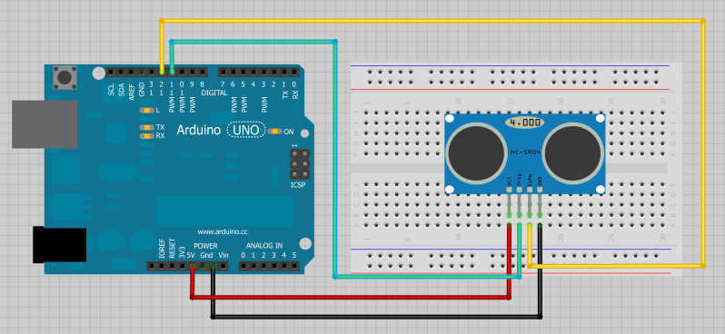
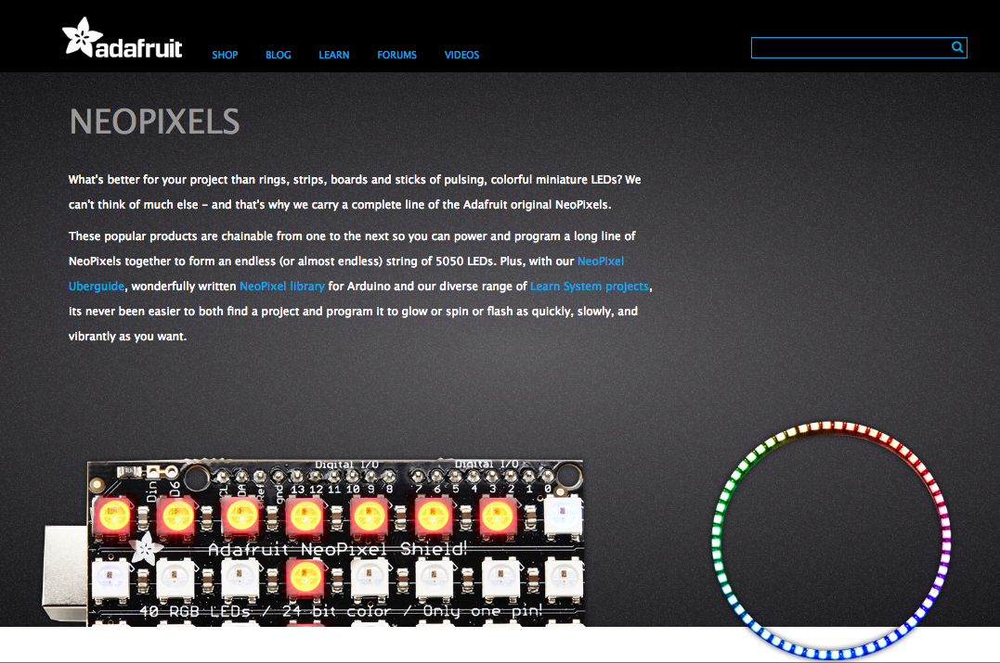

Physical Computing: Day 3
Physical Computing: Day 3
Physical Computing: Day 3
Physical Computing: Day 3
Code Here:
http://bit.ly/1SNjZ2v
- Displays(LCD)
- Sensors
- All about adressable LEDs
- IR Remote Control
- Fritzing
Topics for Today:
- LCD RS pin to digital pin 12
- LCD Enable pin to digital pin 11
- LCD D4 pin to digital pin 5
- LCD D5 pin to digital pin 4
- LCD D6 pin to digital pin 3
- LCD D7 pin to digital pin 2
Additionally, wire a 10k pot to +5V and GND, with it's wiper (output) to LCD screens VO pin (pin3). A 220 ohm resistor is used to power the backlight of the display, usually on pin 15 and 16 of the LCD connector

The HC-SR04 ultrasonic sensor uses sonar to determine distance to an object like bats do. It offers excellent non-contact range detection with high accuracy and stable readings in an easy-to-use package. From 2cm to 400 cm or 1” to 13 feet. It operation is not affected by sunlight or black material like an infrared rangefinders are (although acoustically soft materials like cloth can be difficult to detect). It comes complete with ultrasonic transmitter and receiver module.
Features
- Power Supply :+5V DC
- Ranging Distance : 2cm – 400 cm/1″ – 13ft
- Resolution : 0.3 cm
- Measuring Angle: 30 degree
- Trigger Input Pulse width: 10uS
- Dimension: 45mm x 20mm x 15mm
Build the following circuit
Upload HC-SR04.ino
Libraries
The Arduino environment can be extended through the use of libraries, just like most programming platforms. Libraries provide extra functionality for use in sketches, e.g. working with hardware or manipulating data. To use a library in a sketch, select it from Sketch > Import Library. A number of libraries come installed with the IDE, but you can also download or create your own.
Let install the NewPing library
Go to 'Sketch'->'Include Library'->'Manage Libraries'
Search for 'New Ping'
Go to 'File'->'Examples'->'NewPing'->'NewPingExample'
Introduction to Addressable LEDS


Basic LEDS Need a lot of Wiring

Addressable LEDs provide circuitry to communicate serially

Each LED has a chip to receive, decode, drive LED’s and propagate data

They are chainable, fairly cheap and have their own resistors etc..

You can drive 10000's from 1 microcontroller
Adafruit has branded these Neopixels
You can get them for half the price on Ebay as ws2812's

These have a 5v, GND and DIN pin

Connect 5v to 5v, GND to GND and DIN to Pin6
Import the NeoPixel Library

Import the NeoPixel Library

Let's try some examples and write our own code!
FastLED
Fast LED LibraryAPA102
APA102 aka “Superled”Remote Control

Hook Up the IR reciever

- IRL remote
Install IRLRemote
Receive_Custom_neo.ino